IntroductionTorque 3D provides a full featured particle system with many parameters which can be manipulated to fine tune your particle effects. Particle effects are things such as fire balls, smoke, and water splashes that you create and place into your levels. The Torque 3D Particle Editor is the tool of choice for full control over the look and feel of your effects. At its most basic level a particle effect consists of: an emitter, a particle to be emitted from the emitter, and an image rendered to represent that particle.
SetupFrom the Toolbox, create a new project using the Full template then load the Empty Terrain level.
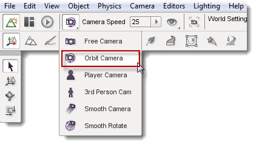 InterfaceThe Particle Editor can be activated from the dmain menu by selecting.
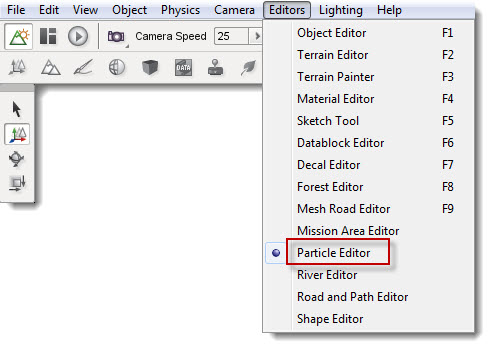
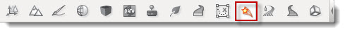
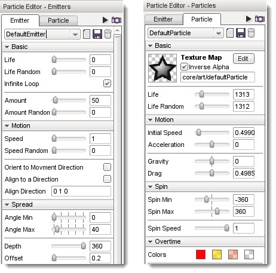
One Shot Effect TypesThere are two types of particle effect: (1) continuous effects, which constantly emit particles and; (2) one-shot effects, which only produce particles for a short time and then stop. Continuous effects run constantly so your changes can be seen in real-time as you adjust the properties of the emitter and its particles. In order to see your changes for one-shot emitters you need to replay the emission. To replay a one-shot emitter click the arrow icon to the right of the tabs. 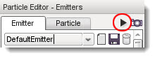 The Temporary EmitterWhen you open the Particle Editor you may have noticed it creates a temporary particle emitter in your current view. This temporary emitter is very useful for quickly trying out different particle editor settings.If your view is changed and you no longer see temporary emitter, press the little camera icon to the right of the tabs to place it back into view. It will always be placed in the center of your current view. 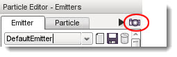
New Emitter / ParticleTo create a new blank emitter or particle that is ready to be configured, press the new icon on the Emitter or Particle tab as appropriate. 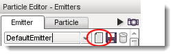 Save Emitter / ParticleAfter editing an emitter or particle save the new settings by pressing the save icon on the Emitter or Particle tab as appropriate: 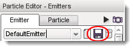
projectName\game\art\levels\levelName.mis Particles can be found in a file named: projectName\game\art\shapes\particles\managedParticleData.cs Emitter PropertiesThe Emitter tab contains the properties that define an Emitter. Properties are grouped into sections: 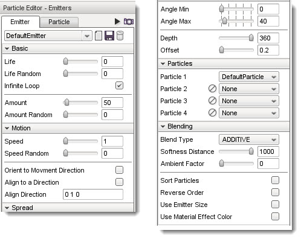 BasicBasic properties affect the base emitter:
Life (Random): Substitutes a random value for the life property. Infinite Loop: When enabled this emitter will continuously produce particles. This setting effectively causes the Life and Random Life properties to have no affect on the emitter. Amount: The time in ms between each individual particle released from the emitter. Amount Random: Random Variation amount to be applied to the amount setting. Motion:These settings will affect the emitter spread pattern, speed, and particle image orientation:
Speed Random: A random setting for varying the speed. Orient to Movement Direction: Enabling this option fixes the particles image to the velocity direction of the particle. Note this will over ride any particle spin settings.
Align Direction: The vector used for particle alignment if the Align to a Direction option is checked. SpreadThese setting affect how the spread pattern will be dispersed:
Angle Max: The maximum angle for the emitter spread pattern.
Depth: The depth of the released pattern. A setting of 360 will create a spherical spread pattern when Angle Max is set to 360. Offset: The distance from the emitter that particles will be released. Effectively the distance that the particle will be visible to the viewer.
ParticlesThis affect assigns which particle(s) will be emitted from this emitter:
If at any time you need to remove a particle press the clear icon. Particle 1 can not be removed.
BlendingThese setting affect how the particle(s) are rendered
Softness Distance: The particle edge blending distance. Removes the hard edges where the particle meets an object.
Ambient Factor: Adjusts the alpha blend (level of the particles which affects how transparent they are). Sort Particles: The order in which particles are rendered. Reverse Order: When enabled, reverses the render order set in the Sort Particles setting Particle PropertiesThe Particle tab contains the properties that define a Particle. Properties are grouped into sections: 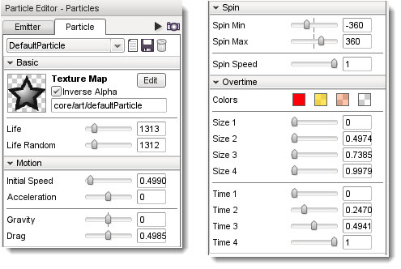 BasicParticle basic settings
Inverse Alpha: Invert the alpha channel on the partice image (if one exists). Life: The time in ms (milliseconds) after its creation that the particle will exist for. Life Random: Random variation to the particle life span. MotionThese settings affect the velocity of the particle:
Acceleration: The rate at which the particle's velocity with increase or decrease. Positive values cause a particle to speed up over time after being emitted. Negative values cause a particle to slow down over time after being emitted. Gravity: The gravitational force to be applied to particle. Positive values cause the particle to fall to the ground. Negative values cause the particle to rise from the ground. Drag: The amount of force working against the particle velocity. Drag will slow a particle's movement. SpinThese settings affect if, and how, a particle rotates in degrees:
Spin Max: The maximum rotation to be applied to the particle. Spin Speed: The speed of particle's rotation. Overtime
Each particle can have up to four color and size settings, which can be set to change over time.
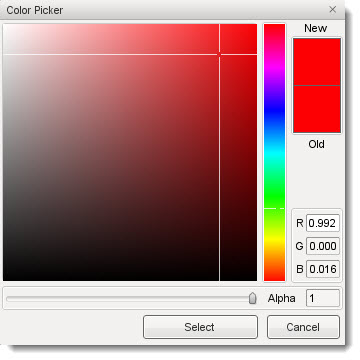 To set a color value you may: enter R (red), G (green), and B (blue) color values; click anywhere within the gradient on the left or; click anywhere in the vertical "rainbow" strip. Red, green and blue color values range from 0 to 255 and indicate the amount of that color present in the overall particle color.
Time 1-4: Each slider sets the time for that stage. Emitter and Particle Example SettingsThe best way to get an understanding of the particle system is to experiment with the settings. The following examples use the images below. Right click on each of the images and save them to you project's particle folder at: projectName\game\art\shapes\particles
Save this image as spark.png: 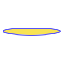 Fire Effect - LoopingIn this example we will create a fire effect with a flickering rising motion.
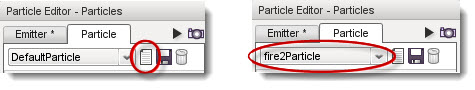
After saving the particle you should now see that gray stars have been added to the golden stars coming from the temporary emitter. This is a preview of your new particle. In the Basic section of the Particle tab take note of the thumbnail picture to the left of the Texture Map label. The emitter is now generating gray stars because that is the default texture assigned to a new particle.
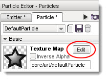
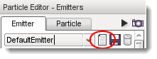
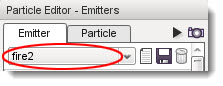
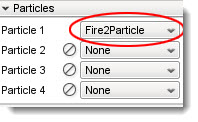
Plasma Spark Effect - One Shot ExampleThis is an example of a one-shot effect which only emits particles for its configured period of time. You will need to use the re-trigger button to view this effect each time you make changes. 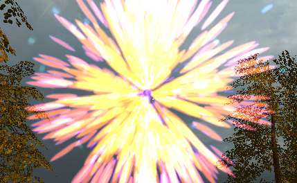
ConclusionThis article covered the Torque 3D particle system and its many properties. You should now have a basic understanding of Emitters, Particles, and their parameters. By experimenting with the settings and trying different particle images, you will gain valuable knowledge ready for use in your own future projects. You will soon be creating your own special effects from water drops to rocket trails with Torque 3D's Particle Effects Editor. |


{kind=link}
{kind=link}
{kind=link}
{kind=link}
{kind=link}
{kind=link}
{kind=link}